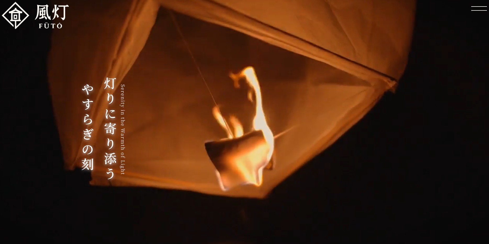
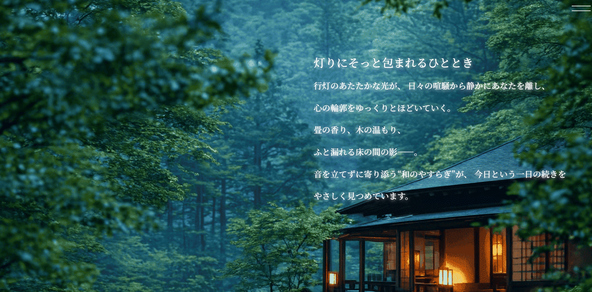
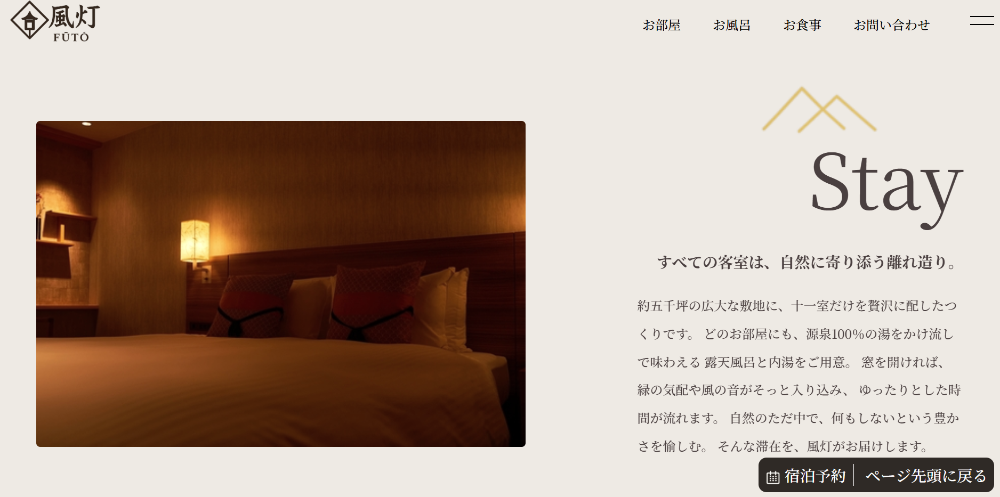

HTML / CSS / JavaScript
Ryokan Website



Overview
このプロジェクトは HTML/CSS を用いて制作した旅館紹介サイトです。 客室、食事、温泉、問い合わせフォームなど、実際の旅館サイトを想定した構成で制作しました。
Tech Stack
- HTML / CSS
- JavaScript
- Photoshop（画像調整）
- 生成AI（画像の生成）
Features
- 客室紹介ページ
- 食事紹介ページ
- 温泉紹介ページ
- 固定ナビゲーションによるスムーズなページ移動
Key Points
旅館の雰囲気に合わせた落ち着いた配色と、 画像を多く使った視覚的に分かりやすい構成を意識しました。 また、JavaScript による動きを加えることで、静的サイトでも動きのある UI を実現しています。